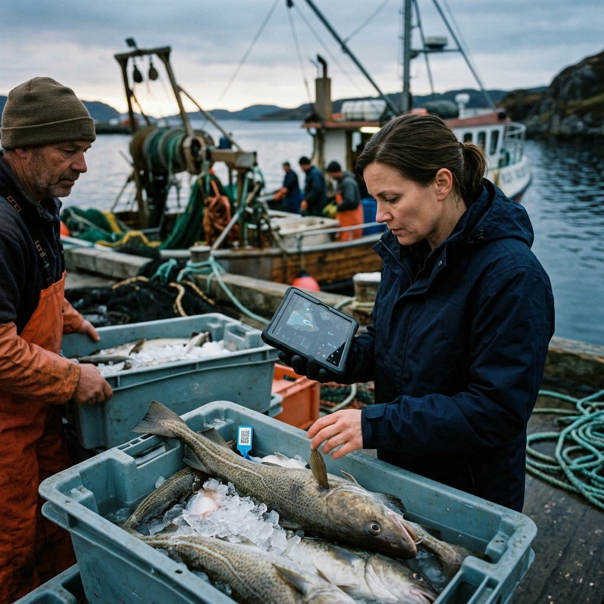

KNOW THE JOURNEY BEHIND YOUR SEAFOOD.
Our transparent systems allow you to track the origin, method, and handling of our premium supply.
WHY TRACEABILITY MATTERS
In an industry historically plagued by opacity, we believe that true sustainability is impossible without total transparency.
Eliminating Seafood Fraud
Mislabeling is a persistent issue in global seafood supply. By implementing end-to-end tracking, we guarantee that the species you order is exactly what arrives at your kitchen.
Empowering Responsible Fishers
Traceability isn't just about data; it's about people. Our systems ensure that the premium paid for responsibly sourced seafood goes directly back to the coastal communities.
OUR TRACKING TECHNOLOGY
The modern tools we use to maintain unbroken visibility.
Digital Catch Records
Logged at sea or pond-side via satellite-linked tablets.
Unique QR Lots
Every batch receives a unique identifier that follows it to delivery.
IoT Temp Loggers
Continuous temperature monitoring during transit and storage.
Cloud Sync
Data is immediately available to you upon receipt of goods.
DEMO TRACEABILITY RECORD
Lot ID: TT-2026-001